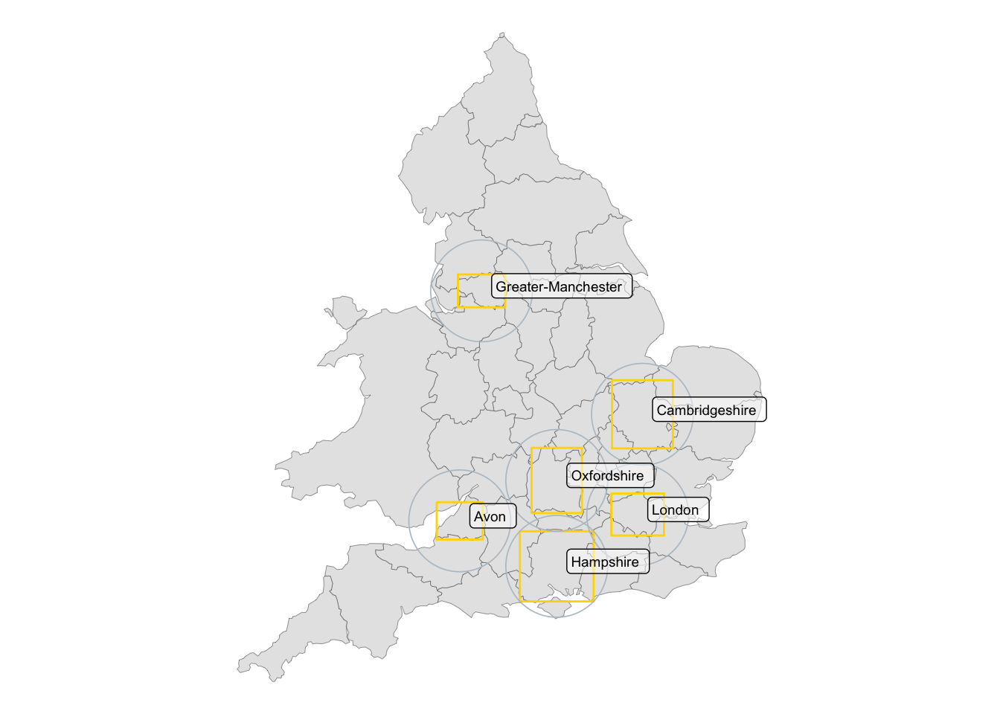
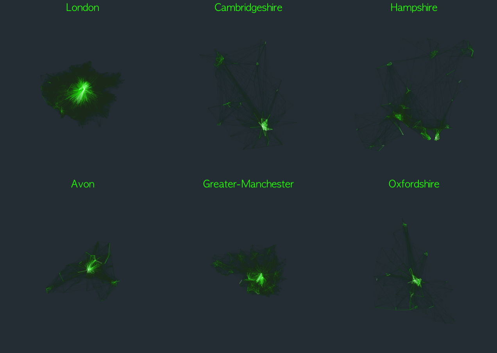
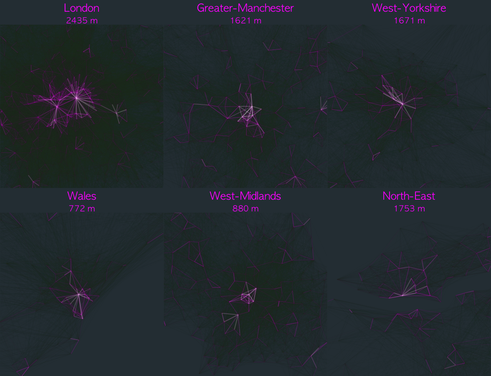
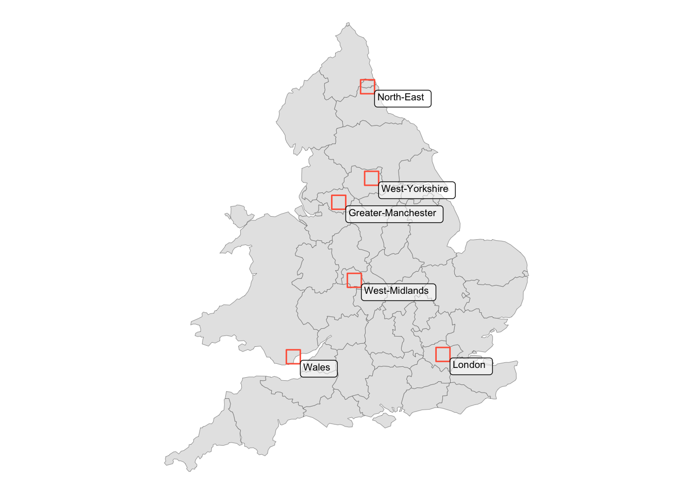

Code
knitr::opts_chunk$set(echo = TRUE, message = FALSE, warning = FALSE)
library(pct)
library(stplanr)
library(tidyverse)
library(sf)
library(ggplot2)
library(extrafont)
library(patchwork)Active travel origin-destination data visualised across major urban areas in the UK
Nicolas Palominos
May, 2022
By visualising a large quantity of travel data we can observe the spatial patterns of different cities1.
Provided that travel behaviour is associated with the distance to potentially attractive destinations and that cycling in particular can be sensible not only to distance but also to the quality of cycling infrastructure, the visualisation of cycling flows can reveal interesting patterns of urban morphology. This is particularly relevant for identifying city and neighbourhood level urban adaptations and strategies that can promote more energy and space-efficient modes of travel and contribute to achieving net-zero cities.
This exercise uses origin-destination data that captures the number of trips by mode between census areas in the UK.
The following packages are necessary to run the code.
Origin-destination data is obtained from the R package pct2. This code will download all ‘flows’ data, the centroids of census areas (MSOAs) and PCT defined regions.
# Get origin destination data from the 2011 Census
# ref: https://www.rdocumentation.org/packages/pct/versions/0.9.1/topics/get_od
flows <- get_od(
region = NULL,
n = NULL,
type = "within",
omit_intrazonal = FALSE,
base_url = paste0("https://s3-eu-west-1.amazonaws.com/",
"statistics.digitalresources.jisc.ac.uk", "/dkan/files/FLOW/"),
filename = "wu03ew_v2",
u = NULL
)
# Download MSOA centroids for England and Wales
nodes <- get_centroids_ew()
# Download regions (pct defined regions)
regions <- pct_regionsTo filter (slice) flows by mode we follow a standard tidyverse workflow in R that selects unique origins and destinations from the flows and nodes data. The function od2line converts the filtered flows and nodes data into an sf object.
flows %>%
filter(bicycle > 0) %>%
# remove O-D geo areas that are NA eg. not MSOA
filter(!is.na(geo_name2)) -> flows_bike
# create sf with unique nodes
x1 <- flows_bike$geo_code1 %>%
unique() %>%
as.data.frame()
x2 <- flows_bike$geo_code2 %>%
unique() %>%
as.data.frame()
bind_rows(x1, x2) %>%
unique() %>%
rename(nodes = ".") -> flows_nodes
# filter by msoa code
nodes %>%
filter(msoa11cd %in% flows_nodes$nodes) -> nodes_bike
# Convert origin-destination data to sf lines (od2line {stplanr})
bike_commute <- od2line(flows_bike, nodes_bike)The table shows the 6 regions with highest aggregated flows (Total) and the trips of the desire line with highest count (Maximum)
| Region | Total | Maximum |
|---|---|---|
| London | 136858 | 109 |
| Cambridgeshire | 26163 | 613 |
| Hampshire | 22513 | 118 |
| Avon | 22143 | 311 |
| Greater-Manchester | 21099 | 55 |
| Oxfordshire | 17271 | 444 |
Regions with the higher number of trips by bicycle are highlighted below. Overall, it can be observed that this corresponds with University cities which would tend to have younger populations.

Plotting each region side-by-side at the same scale allows to compare the different bicycle travel patterns. It is clear that London, for example, tends to be more monocentric than the other regions where more than one bicycle destination is highlighted.

The same scripts can be used to visualise the patterns of people on-foot.
We now observe a different set of regions, however, London and Greater Manchester are still at the top which is not surprising given that these are the most populated areas in the UK.
| Region | Total | Maximum |
|---|---|---|
| London | 233591 | 1293 |
| Greater-Manchester | 76522 | 975 |
| West-Yorkshire | 61787 | 798 |
| Wales | 57842 | 846 |
| West-Midlands | 54413 | 525 |
| North-East | 53878 | 890 |

When comparing areas with highest bicycle and foot flows it is interesting to note that only London and Manchester have high number of trips for both modes. High performing cities at walking commute that could have the potential to increase bicycle trips are Leeds, Cardiff, Birmingham and Newcastle. From the walking flows it is possible to observe that there is quite a big variation in the length of the desire line with highest flow count (subtitle), varying from 2435 m in London to 772 m in Wales (Cardiff).

As an illustration the bicycle flows plot contains ~300k origin-destination lines. Often, this kind of plots tend to get cluttered making it difficult to identify meaningful patterns (the total number of links between n set of nodes is n(n-1)/2). An important contribution of this graphic is that it can provide a synoptic comparative view of flow patterns that relate to the morphology of cities. Additional quantitative analysis could be done by calculating the centrality degree distribution of the studied areas to investigate how the number of connections vary across origins and destinations.
Moreover, the code in this exercise can be adapted to investigate other patterns by mode of travel or include other parameters such as travel by age groups (see data in UK Data Service3). Additionally, instead of highlighting the areas with high density of active travel flows, this approach could be used to identify areas where there could be a modal shift from car travel to active travel.
A version of this exercise was featured in the twitter feed of R posts you might have missed!↩︎
See the Propensity to Cycle Tool project website↩︎
@online{palominos2022,
author = {Nicolas Palominos},
title = {Travel Patterns in {UK} Cities},
date = {2022-05},
langid = {en}
}